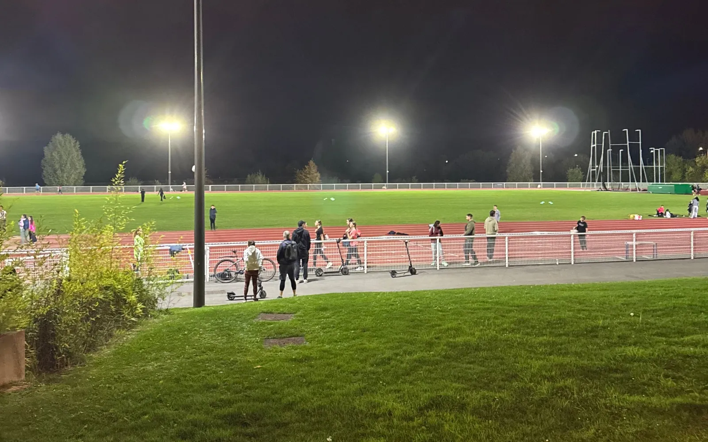
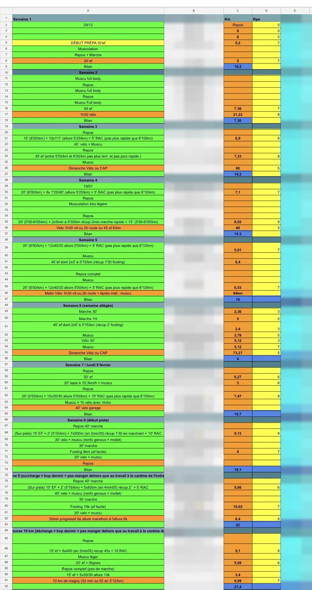

COACHING PERSONNALISÉ
Un accompagnement sur mesure avec moi. Choisis ce qui correspond à ton objectif.

COURSE À PIED
Un plan construit sur la durée, du 5 km au marathon sur route, avec suivi quotidien.
Dès 30 €VOIR LES OFFRES ↓
PRÉPARATION PHYSIQUE
Un accompagnement personnalisé en préparation physique et musculation, sans durée minimale.
30 € / moisDÉCOUVRIR →COURSE À PIED
2 mois
Deux mois d'accompagnement, soit 15 € par mois.
6 mois
Six mois d'accompagnement, soit 12,50 € par mois.
(-17 % : tu économises 15 €)
1 an, saison complète
Douze mois d'accompagnement, soit 10 € par mois.
(-33 % : tu économises 60 €)
MA PHILOSOPHIE D'ENTRAÎNEMENT
Un accompagnement construit sur une saison entière, pas sur un programme générique.
Une saison complète
Le suivi peut couvrir toute une année sportive. On construit sur la durée, avec des cycles qui s'enchaînent au lieu de repartir de zéro.
Hiver : volume
En hiver, on construit la base aérobie : plus de volume, des allures faciles, un travail d'endurance qui prépare le reste de la saison.
Été : qualité
En été, le volume baisse et la qualité monte : allures plus rapides, travail de vitesse et d'explosivité, pour être complet.
Mes points forts d'abord
Je travaille d'abord ce que tu fais déjà bien. Un point fort solidifié devient une arme, et tire le reste vers le haut.
Volume adapté au niveau
Selon ton niveau et ton emploi du temps, le nombre de séances par semaine varie de 3 à 6. Jamais moins de 3, jamais plus de 6.
Entraînement croisé
Vélo et musculation ajoutent du volume sans ajouter de fatigue excessive ni de risque de blessure. La musculation, 2 fois par semaine, à la maison ou en salle, est intégrée en période de préparation pour prévenir les blessures, puis retirée à l'affûtage. En hiver, c'est surtout du renforcement ; en été, plus de force pour être performant sur des efforts courts et intenses.
Décharge toutes les 4 semaines
Toutes les 4 semaines, une semaine allégée pour assimiler le travail et éviter la stagnation.
Double projet possible
On peut viser plusieurs distances dans la même saison : par exemple un 10 km et un semi, chacun avec sa préparation spécifique.
Je commence par te connaître
Ton niveau, tes courses passées, tes objectifs, le nombre de séances que tu peux courir par semaine, et si tu pratiques un autre sport à côté.
Un plan qui te ressemble
Ton expérience, ton niveau, ton temps et tes contraintes au quotidien changent le plan. Selon ton objectif, la période, la préparation et l'affûtage ne sont pas les mêmes.
Un coureur complet
Je travaille ta vitesse, ta résistance à l'allure et ton foncier, en plus du spécifique et de tes points forts. Une méthode unique, basée sur la science et l'expérience.
Un suivi humain
Chaque jour, je regarde tes séances dans ton Google Sheet (ou sur Strava). Tu le remplis et j'y ai accès : tu n'as rien à m'envoyer. Chaque week-end, je refais ton plan à partir de tes retours, et on en discute par appel ou par message.
Ce que je veux que tu retiennes
La sécurité, la progression, la discipline et le plaisir. Prends du plaisir. Quand tu penses être au maximum, tu ne l'es jamais : le corps est limité par l'esprit, et tu peux faire beaucoup plus que ce que tu crois.
Ce que je refuse : promettre des chronos, et accompagner quelqu'un qui n'a ni discipline ni implication.
Comment ça s'est passé pour Fabio
Un exemple concret d'organisation sur une saison, avec ses contraintes de vie et son emploi du temps.
La semaine
Deux séances de course en période générale, trois en période proche de compétition, deux en affûtage. Deux à trois séances de musculation, plus une sortie vélo le week-end quand c'était possible.
Le volume
15 km par semaine au départ, jusqu'à 30 km maximum. Une progression très graduelle, sans forcer.
Les objectifs
Des cycles enchaînés, avec une course environ tous les deux mois. De quoi rester motivé sans s'épuiser.
L'affûtage
Avant une course : moins de musculation, plus de travail spécifique, même volume mais plus de qualité, pour être prêt le jour J.
Le suivi au quotidien
Son plan était sur un Google Sheets partagé : séances et retours de l'athlète, mis à jour chaque week-end. Accessible sur téléphone et sur ordinateur, et personnalisable à tout moment.
Le contact
Un appel tous les deux semaines, en option, pour faire le point sur la progression et ajuster si besoin.

Chaque plan est construit sur mesure. Cet exemple montre une organisation possible, pas un modèle à reproduire à l'identique.
Prêt à progresser ?
Écris-moi, on construit ton plan ensemble.